in 15 Latin American and carribean countries
Building Stronger Communities Together
Dilivering Age
in Latin America and the Caribbean
Food For The Poor’s approach to delivering aid across Latin America and the Caribbean combines immediate relief with long-term development. In times of crisis, Food For The Poor mobilizes emergency shipments of food, medicine, and essential supplies, working closely with government agencies, international organizations, and in-country partners to ensure aid reaches those most in need.
Beyond emergency response, Food For The Poor invests in sustainable solutions—including housing, education, health care, water projects, and livelihood programs—that empower families and strengthen local economies. By tailoring its efforts to each country’s unique challenges and leveraging partnerships at every level, Food For The Poor ensures that its aid not only meets urgent needs but also builds resilience and hope for the future.
Our Partners and Their Role in the Aid Distribution
Food For The Poor collaborates with in-country partners, such as local organizations, churches, universities, colleges, and nonprofits that operate within the country. These partnerships are essential because:
- They are based locally in the communities where aid is delivered.
- They bring deep knowledge of local culture, needs, and logistics.
- They support the distribution of supplies, manage projects, and engage directly with communities.
- They provide long-term presence, ensuring programs remain sustainable and accountable long after outside teams have left.
Food For The Poor partners with international organizations to strengthen its ability to deliver aid effectively and sustainably across multiple countries.
- Access to resources: International partners, such as the World Food Programme, USAID, and Feed My Starving Children, provide supply chains and technical expertise.
- Specialized knowledge: They bring expertise in health care, nutrition, disaster response, and infrastructure.
- Best practices: Partnerships ensure programs follow global standards and humanitarian benchmarks.
- Efficiency: Coordination with international groups reduces duplication of efforts in countries where multiple aid organizations operate.
- Capacity building: These partners offer training, research, and monitoring systems to strengthen program impact.
- Sustainability: Their support enables Food For The Poor to move beyond short-term relief and advance long-term, sustainable development solutions.
Governmental organizations play a central role in ensuring that aid and development efforts are effective and sustainable. Food For The Poor works closely with governments because they provide:
- Efficient regulation: They regulate imports, customs, and shipping, ensuring donated food, medicine, and supplies are cleared quickly and legally.
- Needs identification: Ministries, such as health, education, agriculture, and housing help identify priority needs and the most vulnerable populations.
- Strategic collaboration: Collaboration prevents duplication of efforts and ensures that Food For The Poor’s programs align with national development plans.
Gifts in Kind (GIK) partners are organizations, corporations, and manufacturers who donate products instead of cash—helping Food For The Poor serve millions of people across Latin America and the Caribbean.
- Essential supplies: GIK partners supply food, medicine, medical equipment, clothing, building materials, school supplies, and household items.
- Cost savings: These donations greatly reduce costs, allowing Food For The Poor to stretch donor dollars further.
- Efficient shipping: Donated goods are consolidated into containers and shipped to partner countries.
- Local distribution: Once in-country, items are distributed through Food For The Poor’s church networks, NGOs, and community groups, ensuring they reach families in need.
- Corporate repurposing: Partnerships with businesses also allow companies to repurpose surplus or overstock goods for humanitarian use.
- Strengthening programs: GIK contributions strengthen Food For The Poor’s core program areas, including hunger relief and nutrition, community development, health, education, and water, sanitation, and hygiene (WASH).
Impact investors supply funding that goes beyond short-term relief, helping Food For The Poor build long-term solutions.
- Dual focus: Seek both social impact and financial return, aligning with Food For The Poor’s mission to lift communities out of poverty.
- Scalable programs: Support income-generating initiatives, such as Haitian peanut farming and aquaculture projects.
- Strengthening local economies: Create jobs and grow small businesses, reducing dependence on aid and fostering family self-reliance.
- Expanding networks: Bring in business leaders, innovators, and philanthropists, multiplying Food For The Poor’s capacity to tackle poverty from many angles.
Food For The Poor: Transforming Lives Across Nations
GUATEMALA
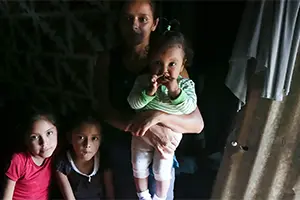
Make a meaningful impact in the lives of Guatemalans in need by shopping our gift catalog to provide essential resources, education, and healthcare. Every contribution brings hope, nourishment, and empowerment to individuals and communities.
HAITI
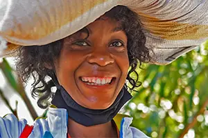
Haiti's violence has forced 360,000 people out of their homes, requiring Food For The Poor's distribution centers to restock and ship more containers to address food insecurity and prepare recovery efforts for internally displaced families.
HONDURAS
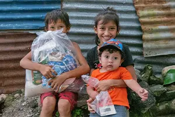
Make a meaningful impact in the lives of families in Honduras. Fund our aid programs covering urgent or essential assistance. Together, we can empower our program participants to become self-sufficient and build stronger communities through development.
JAMAICA
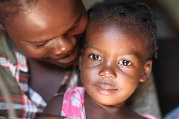
Help us fund Jamaica's journey out of poverty with a donation. Together we can empower families to become self-sufficient and build stronger communities through sustainable development.
COLUMBIA
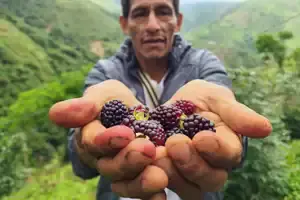
Fund operations for hunger and poverty relief among Colombian families, empowering them to become self-sufficient and build stronger communities through sustainable development, making a meaningful impact in their lives.
DOMINICAN REPUBLIC
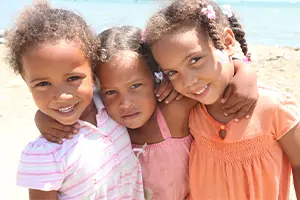
Donate to support the Dominican Republic’s journey toward poverty alleviation by empowering families to become self-sufficient and strengthening communities through sustainable development, paving the way to a better quality of life.
EL-SAVADOR
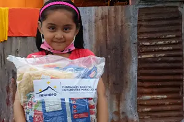
Help us fund Salvadorians' journey out of poverty with a donation. Browse through our gift catalog to provide immediate relief, bolster self-reliance, or bring hope. Poverty in El Salvador can be overcome. Your donation will go straight to the most impoverished communities
ECUADOR
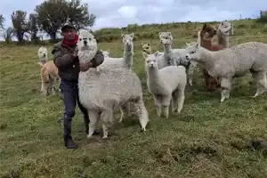
Help us fund Ecuador's journey out of poverty with a donation. Together, we can empower families to become self-sufficient and build stronger communities through sustainable development. Poverty in Ecuador can be overcome.
BOLIVIA
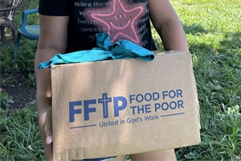
Help us fund Bolivia's journey out of poverty with a donation. Together, we can empower families to become self-sufficient and build stronger communities through sustainable development. Poverty in Bolivia can be overcome.
GRENADA
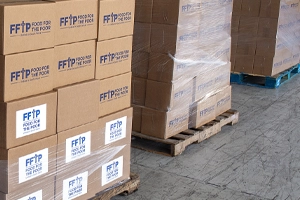
Some of Grenada’s most severe poverty can be found on former estates, where barracks-like accommodations are still used by laborers. In such communities, housing conditions are often extremely rudimentary, with no access to sanitation or other basic services.
GUYANA
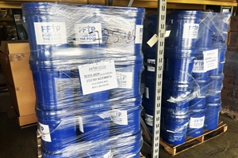
Guyana experiences high emigration and brain drain, with 39% of all Guyanese citizens currently residing abroad and roughly half of all Guyanese with a tertiary education having emigrated to the United States, according to The World Bank.
PANAMA
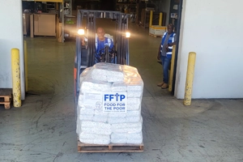
Panama is a compact nation that has seen continuous economic growth. Despite this progress, poverty and income inequality persist stubbornly, particularly affecting rural indigenous areas and Afro-Panamanian communities, according to the World Bank.
SAINT-LUCIA
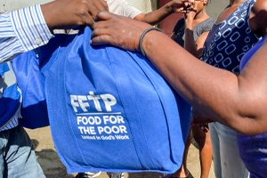
Food For The Poor ships containers filled with essential goods to families in need in St. Lucia and provides additional poverty-alleviation support as needs arise. Saint Lucia measures 606 square miles, about five times the size of Washington, D.C.
PERU
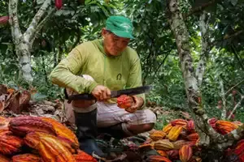
Peru struggles with rising numbers of families living in multidimensional poverty due to the convergence of COVID-19, conflict, and climate change. More than half of the population lives in areas that are highly vulnerable to natural disasters and climate change.
TRINIDAD and TOBAGO

A developing nation composed of two islands, Trinidad and Tobago is located at the southern end of the Caribbean chain of islands, just north of Venezuela. Despite its beautiful landscapes and beaches, the nation suffers from widespread poverty.
Donate Now
Top